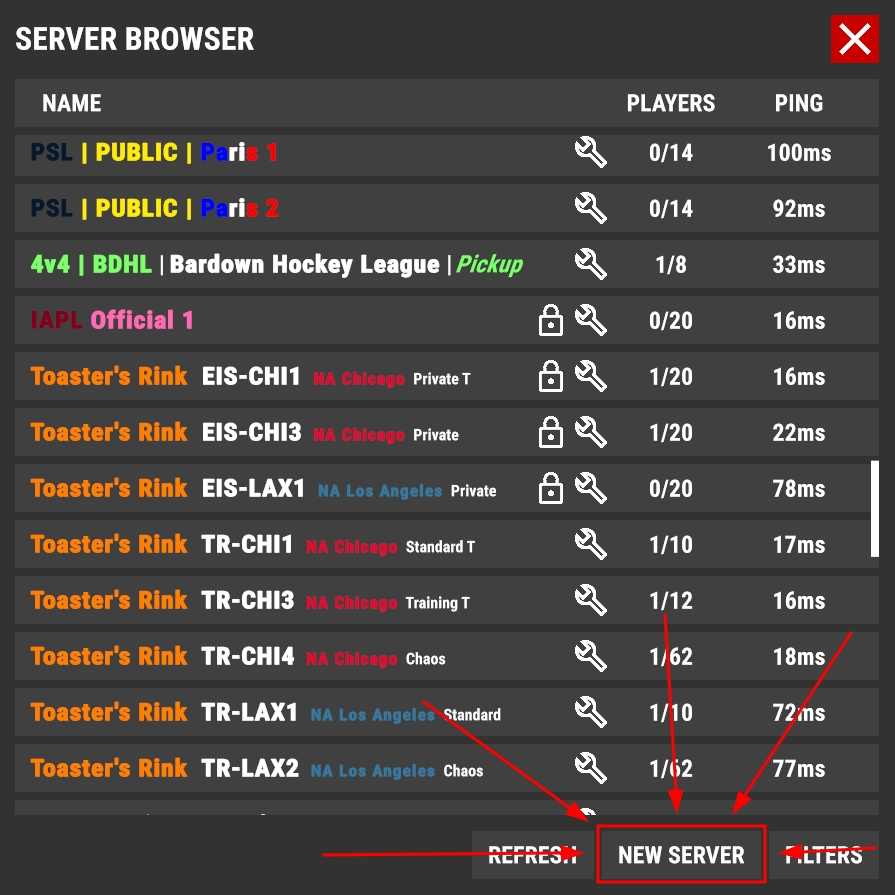
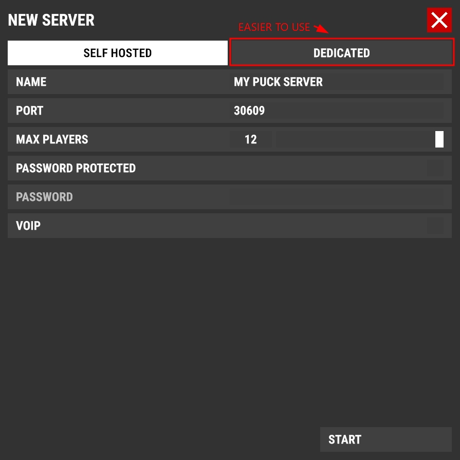
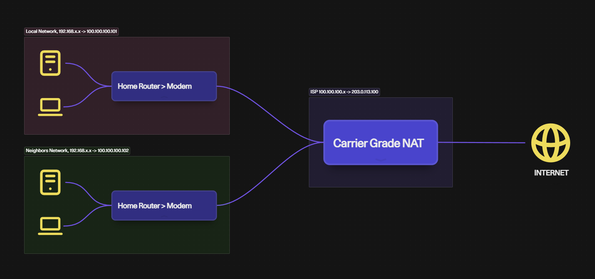

Getting Started - The Simple Way
There are TWO different ways of hosting your own Puck server. The simple way (covered here) is to open the game normally, head to the "SERVER BROWSER" menu, and click "NEW SERVER" at the bottom. The advanced way (a dedicated Linux server) is covered further down.

You will be presented with this screen

⚠️ Important Considerations
This method relies on good ping and framerate. Dedicated servers are limited to 200 Hz / 200 FPS. Self-hosted servers need solid network and system specs for higher refresh rates.
The videos below show an exaggerated high vs low frame rates. In Puck, physics run server-side, so your mouse movements are limited by the server's tick rate, causing sluggish controls unless adjusted.
Port Forwarding Setup
If players can't connect to your server, you need to open ports 30609 (TCP & UDP) on your router. So long as you are not behind a CGNAT.
Access your router's admin panel: Run
ipconfig in Windows Terminal, copy the "Default Gateway"
IP address (like 192.168.1.1), paste it into your browser's address
bar, then log in using the credentials typically on your router's
label.
Port Forward Setup Example:
- Protocol:
TCP (For ping) & UDP (For gameplay) - Internal Port:
30609 - External Port:
30609 -
Internal IP: Your PC's local IP (find with
ipconfigin Windows terminal)
Port Forwarding Guides by Router Brand
- Linksys Router Port Forwarding Guide
- Netgear Router Port Forwarding Guide
- ASUS Router Port Forwarding Guide
- TP-Link Router Port Forwarding Guide
- Universal Port Forwarding Guide (All Brands)
Enabling UPnP
Alternative: You can enable UPnP instead of manual
port forwarding. This is less reliable but automatically handles port
forwarding for all applications. Look for a UPnP toggle in your router
admin settings (usually at 192.168.1.1).
Security Warning
Enabling UPnP can resolve connection issues rather than simply port forwarding, however, this can create security vulnerabilities. A lot of routers have UPnP disabled by default for a reason.
Still Can't Connect?
Check Your PC Firewall
Your PC's firewall might be blocking the connection even when your router is configured correctly. Make sure Windows Firewall and any other security software are allowing port 30609 through (on build B202 this was ports 7777 and/or 7778).
CGNAT / Double-NAT Issues
If your network is behind a "double-NAT" or CGNAT (Carrier-Grade NAT), port forwarding won't work properly.
How to check: Compare your router's WAN IP address with your public IP from ifconfig.io. If they don't match, you're behind CGNAT.
Solution: Use a paid VPS provider instead (see the advanced guide below).

The Advanced Way
Want a more permanent, dedicated, and high-performance setup?
VPS vs Home Server
VPS: Professional hosting, better uptime, monthly cost. Best for 24/7 public servers (CDL, Toasters Rinks & PHL).
Home Server: No ongoing costs, full control, uses your bandwidth/electricity. Best for friends & family servers.
VPS providers
The following providers are recommended for hosting. The cheapest plan is not always the best, look for 1-2 cores + 2GB RAM — both options below have cheap plans that meet this requirement. Both are affiliate links to make it cheaper (and why not) and I may earn credit, VPS.org gives you $50 in free credit.
-
VPS.org
— Cheapest option
The most affordable option on this list. Plans with 2GB RAM are available at a low monthly cost. Good reliability for lightweight servers. Ideal if you're on a tight budget.
-
Vultr
— Most reliable option
A well-established provider with data centers worldwide. Slightly pricier than VPS.org but more proven reliability and easier to use. Great if you want the lowest-friction setup experience.
Operating System
Debian (Recommended) - Stable, beginner-friendly,
minimal resources.
Ubuntu Server - User-friendly, great community
support.
Fedora Server - Modern features, cutting-edge
packages.
Docker Container - Easiest deployment (Not available
yet).
Windows Server - Familiar interface but
resource-heavy. Not recommended.
Server Setup & Configuration
Prerequisites
- A Debian-based (Debian 13 Trixie) server with SSH access (Debian 12 Bookworm uses the same/similar steps)
- Root access and preferably a dedicated sudo user
- At least 2GB of memory (each Puck server uses ~300MB)
- Basic command line knowledge
These commands are executed as root user
If you are not comfortable with the command line, please use the simple guide above.
You can use sudo to run commands as root, but for the sake of
simplicity, we will be using su -l for the entire
guide.
A dedicated puckd user will be created below for the server daemon
Step 1: Update Your System
apt update && apt upgrade -yStep 2: Install Prerequisites & SteamCMD
Install necessary tools and prepare SteamCMD:
On debian you need to add the non-free repo, but on distros like Ubuntu you may not
apt install software-properties-common
echo "deb http://deb.debian.org/debian trixie main contrib non-free non-free-firmware" > /etc/apt/sources.list.d/nonfree.list
dpkg --add-architecture i386
apt update
apt install steamcmdNote: If you're on Debian 12 Bookworm, replacetrixiewithbookwormin the line above.
Step 3: Create Server Download Directory
mkdir -p /srv/puck-downloadStep 4: Download Puck Server Files
Use SteamCMD to download the server files:
/usr/games/steamcmd +force_install_dir /srv/puck-download +login anonymous +app_update 3481440 +quitNote: 3481440 is the Steam App ID for Puck's dedicated server. You can verify it on SteamDB.
Step 5: Create System User for Running Server
Create a dedicated system user for running the server:
adduser --system --no-create-home --group puckdStep 6: Set Up the First Server Instance
Create the server directory and assign permissions:
mkdir -p /srv/puck/server1
cp -r /srv/puck-download/* /srv/puck/server1/
chown -R puckd:puckd /srv/puck/server1
chmod +x /srv/puck/server1/start_server.sh
chmod +x /srv/puck/server1/PuckStep 7: Create Server Configuration
nano /srv/puck/server1/server_config.jsonPaste and modify as needed:
{
"port": 30609,
"name": "MY PUCK SERVER - GUIDE",
"maxPlayers": 12,
"password": null,
"tickRate": 200,
"isPublic": true,
"useVoip": false,
"useWhitelist": false,
"mods": [],
"gameMode": "public",
"level": "default"
}
Important Settings
-
Name: Enter your server name (appears in server
browser)
- You can use Unity Rich Text for colors and sizes. Be careful of the character limit and do not abuse this feature.
- Port: Set the port number (default is 30609)
- tickRate: The actual FPS the server will attempt to run at.
-
Mods: The example configuration has no mods, feel
free to browse the workshop and add one like "Gafurix' Custom
Motd" in the mods section:
{ "id": "3721801263", "isEnabled": true, "isClientRequired": false }
Step 8: Create systemd Unit
nano /etc/systemd/system/puck@.servicePaste:
[Unit]
Description=Puck Dedicated Server - %i
After=network.target
[Service]
WorkingDirectory=/srv/puck/%i
User=puckd
ExecStart=/srv/puck/%i/start_server.sh --serverConfigPath /srv/puck/%i/server_config.json
Restart=on-failure
RestartSec=5
# Hardening
NoNewPrivileges=true
PrivateTmp=true
ProtectHome=true
ProtectSystem=strict
ReadWritePaths=/srv/puck/%i
[Install]
WantedBy=multi-user.targetAbout the hardening lines
These five directives sandbox the server without breaking it.
ProtectSystem=strict makes the entire filesystem
read-only to the service except for paths in
ReadWritePaths so Puck can still write logs to
/srv/puck/%i but can't touch anything else on the
system. ProtectHome blocks user home dirs,
PrivateTmp gives the service its own /tmp,
and NoNewPrivileges blocks privilege escalation.
Check the score with:
systemd-analyze security puck@server1
Step 9: Enable and Start the Server
systemctl daemon-reload
systemctl enable puck@server1
systemctl start puck@server1Check status:
systemctl status puck@server1
journalctl -u puck@server1 -fStep 10: Open Firewall Ports
By default, Debian has no firewall configured, meaning all ports are open. On a VPS, this is a security risk.
Install ufw and open required TCP & UDP port
⚠️ Don't lock yourself out
If you're on a remote VPS, allow SSH before running
ufw enable or you will be kicked out of your own
server.
apt install ufw
ufw allow ssh
ufw allow 30609/tcp
ufw allow 30609/udp
ufw enable
Adjust port number based on your configuration.
Managing Multiple Servers
Step 1: Duplicate Server Files
Copy the existing server instance to create a new one:
cp -r /srv/puck/server1 /srv/puck/server2Step 2: Configure New Server Ports
Edit the configuration file and change the port numbers:
Change ports to one above, example 30610 and open it
nano /srv/puck/server2/server_config.json
ufw allow 30610/tcp
ufw allow 30610/udpStep 3: Set File Permissions
Mods & Logging will break if you skip this step
Give ownership of the new files to the puckd user:
chown -R puckd:puckd /srv/puck/server2Step 4: Enable Auto-Start
Enable the new server to start automatically on boot:
systemctl enable puck@server2Step 5: Start and Monitor
Start the server:
systemctl start puck@server2Check if it's working with logs:
journalctl -u puck@server2 -fAdditional configuration
In the latest build you can configure many things including the gamemode itself within the servers directory, here are some examples copied from the developer himself:
Public
-
phaseDurationMap— Duration in seconds for each game phase (defaults below)None— 0sWarmup— 60sPreGame— 10sFaceOff— 5sPlay— 300sBlueScore— 5sRedScore— 5sReplay— 10sIntermission— 10sGameOver— 30sPostGame— 10s
-
spawnDelay— Seconds to wait before spawning players at the start of a phase (default: 5) -
maxPeriods— Number of periods per game (default: 3)
Sample Public game mode config:
{
"phaseDurationMap": {
"None": 0,
"Warmup": 60,
"PreGame": 10,
"FaceOff": 5,
"Play": 300,
"BlueScore": 5,
"RedScore": 5,
"Replay": 10,
"Intermission": 10,
"GameOver": 30,
"PostGame": 10
},
"spawnDelay": 5,
"maxPeriods": 3
}Competitive
- All fields from Public config
-
teamAssignments— Maps each team to an array of Steam IDs pre-assigned to it; players not listed are put into spectator (default: {})
Sample Competitive game mode config:
{
"teamAssignments": {
"Blue": [
"76561198000000000",
"76561198000000001",
"76561198000000002"
],
"Red": [
"76561198000000003",
"76561198000000004",
"76561198000000005"
]
},
"phaseDurationMap": {
"None": 0,
"Warmup": 60,
"PreGame": 10,
"FaceOff": 5,
"Play": 300,
"BlueScore": 5,
"RedScore": 5,
"Replay": 10,
"Intermission": 10,
"GameOver": 30,
"PostGame": 10
},
"spawnDelay": 5,
"maxPeriods": 3
}Puck Dedicated Server CLI Arguments
Server File Paths
-
--logPath— Path to the log output file (default: ./Logs/Puck.log) -
--adminSteamIdsPath— Path to the admin Steam IDs JSON file (default: ./admin_steam_ids.json) -
--bannedSteamIdsPath— Path to the banned Steam IDs JSON file (default: ./banned_steam_ids.json) -
--bannedIpAddressesPath— Path to the banned IP addresses JSON file (default: ./banned_ip_addresses.json) -
--whitelistedSteamIdsPath— Path to the server whitelist JSON file (default: ./whitelisted_steam_ids.json) -
--serverConfigPath— Path to the server config JSON file (default: ./server_config.json) -
--publicGameModeConfigPath— Path to the public game mode config JSON file (default: ./public_game_mode_config.json) -
--competitiveGameModeConfigPath— Path to the competitive game mode config JSON file (default: ./competitive_game_mode_config.json)
Server Inline Config
-
--serverConfig— Inline serialized server config JSON, used instead of loading from a file -
--publicGameModeConfig— Inline serialized public game mode config JSON, used instead of loading from a file -
--competitiveGameModeConfig— Inline serialized competitive game mode config JSON, used instead of loading from a file
Server Management Commands
- View logs:
journalctl -u puck@server1 -f - Restart:
systemctl restart puck@server1 - Stop:
systemctl stop puck@server1
Updating the Server
Stop the server, re-pull the latest files with SteamCMD, then sync them into your instance — excluding configs so you don't nuke your settings:
systemctl stop puck@server1
/usr/games/steamcmd +force_install_dir /srv/puck-download +login anonymous +app_update 3481440 +quit
rsync -a --exclude='*.json' /srv/puck-download/ /srv/puck/server1/
chown -R puckd:puckd /srv/puck/server1
systemctl start puck@server1
Repeat the rsync + chown +
start
steps for each additional instance (server2, server3, etc).
Troubleshooting
Service won't start
Check logs with journalctl -u puck@server1
Can't connect
Double-check firewall and public IP on VPS
Your Puck server should now be live and ready for players.